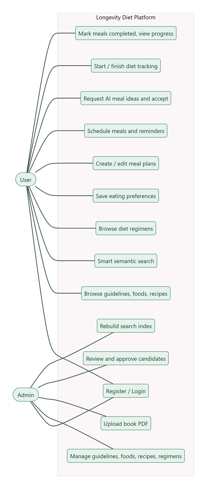
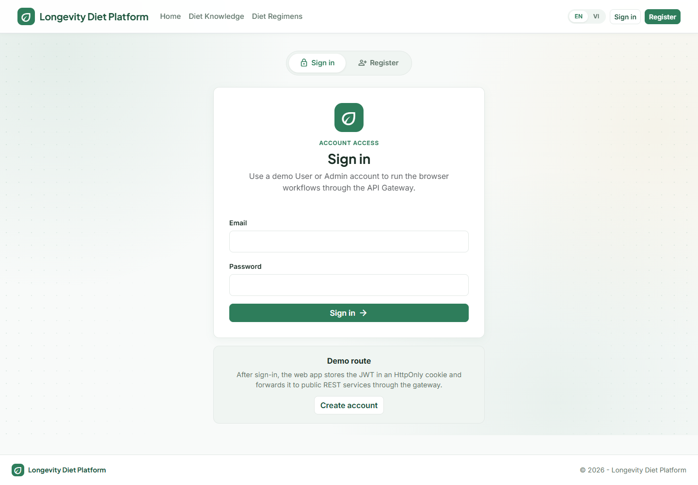
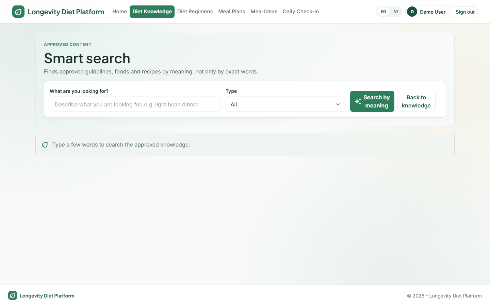
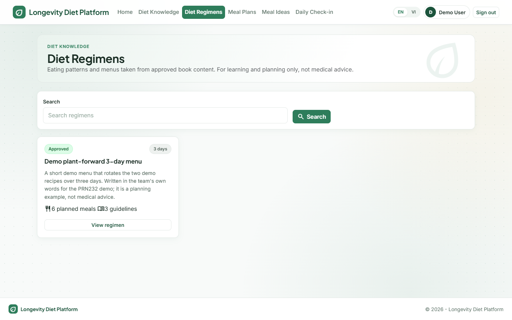
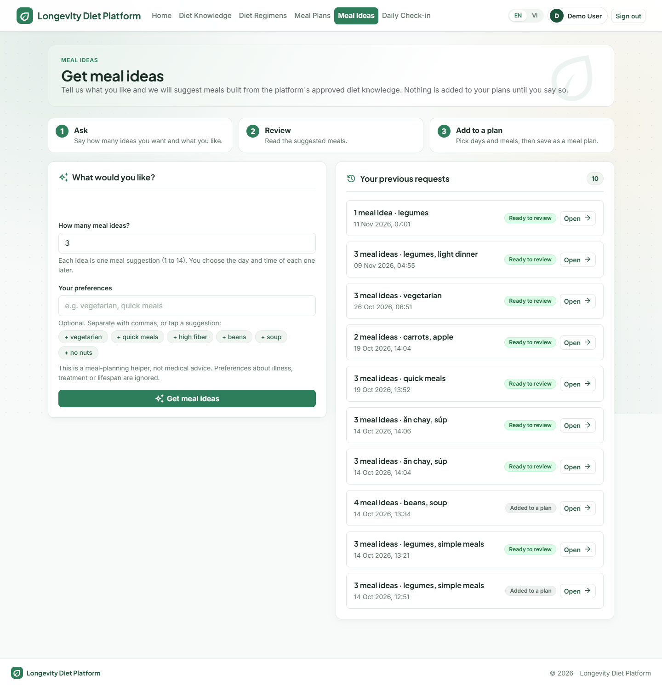
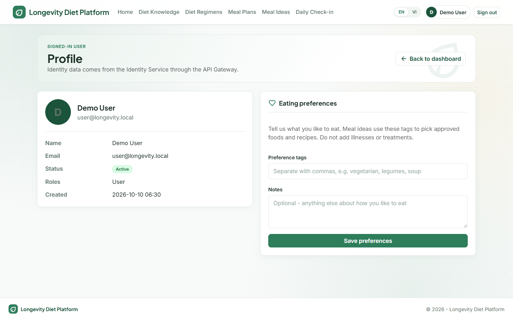
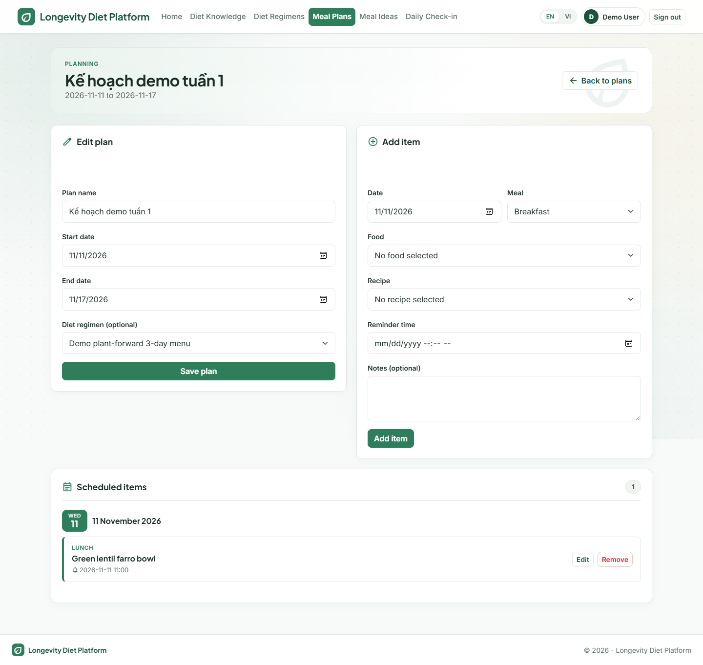
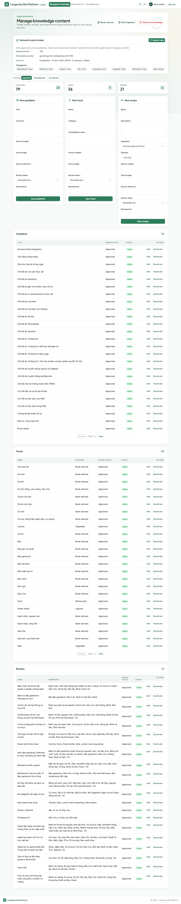
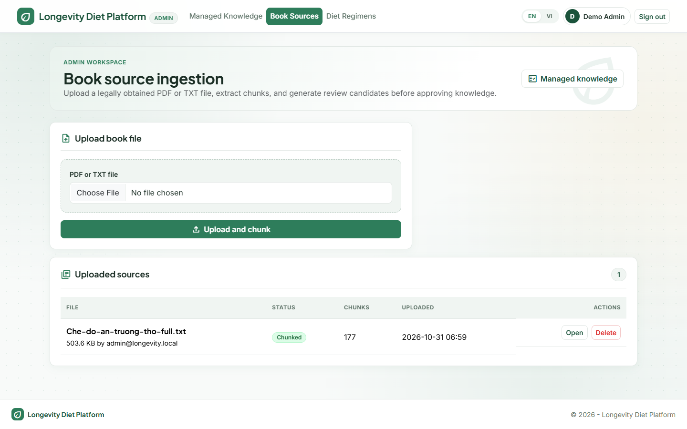

| Document | SRS (structured after IEEE 830) |
| Version | 1.0 (2026-11-12) |
| Related | Business Rules (BR-xx), ERD & Database, Architecture Diagrams |
| Team | [Team name — members and student IDs] |
This document specifies the functional and non-functional requirements of the Longevity Diet Platform so that developers, testers and the lecturer share one understanding of what the system does.
A web application with a microservice back end that helps users apply the principles of the book The Longevity Diet: browse approved knowledge, plan meals, receive reminders, get AI-assisted meal ideas and track progress. Admins build and review the knowledge base. The system is educational and gives no medical advice (BR-01).
| Term | Meaning |
|---|---|
| Approved content | Guideline, food, recipe or regimen with ReviewStatus = Approved and IsActive = true |
| Candidate | Knowledge summary extracted from a book chunk, waiting for Admin review |
| Regimen | A named multi-day diet programme linking guidelines and daily recipes |
| Meal slot | Breakfast, Lunch, Dinner or Snack |
| Outbox | Table that stores messages in the same transaction as data, published later to RabbitMQ |
| JWT | JSON Web Token issued by Identity and validated by every service |
The platform has a browser-based Web application that talks only to an API Gateway. Behind it, four REST microservices own their data; internal services and a worker handle AI and email. Google Gemini and Brevo are optional external providers.

| Actor | Description |
|---|---|
| Guest | Not signed in. May browse public approved knowledge, register and log in. |
| User | Registered person. Plans meals, receives reminders, uses AI ideas, tracks progress. Sees only own data. |
| Admin | Knowledge manager. Maintains content, uploads book sources, reviews candidates, rebuilds the index. |
| Gemini / Brevo | External systems (AI provider, email service). |
Linux containers on Docker Compose (developed and demonstrated on Windows 11). Modern browsers. .NET 9 SDK for builds. Ports: Web 5000, Gateway 5001, services 5101–5105, RabbitMQ UI 15672.
Priority: H high, M medium. “Rules” points to the Business Rules document.
| ID | Requirement | Pri. | Rules |
|---|---|---|---|
| FR-01 | A guest can register with email, display name and password and receives a JWT. | H | BR-04 – 06 |
| FR-02 | A user can log in; invalid credentials and inactive accounts are rejected. | H | BR-07, 08 |
| FR-03 | A signed-in user can view the profile and update eating preference tags and notes. | M | BR-12 |
| FR-04 | The system distinguishes User and Admin; admin endpoints reject other roles. | H | BR-10 |
| ID | Requirement | Pri. | Rules |
|---|---|---|---|
| FR-05 | Anyone can list and view approved guidelines, foods, recipes, categories and regimens with search, filter, sort and pagination. | H | BR-14, 26 |
| FR-06 | A food shows nutrition facts; a recipe shows ingredients and numbered steps; a regimen shows linked guidelines and daily meals. | M | BR-18 – 24 |
| FR-07 | Smart search returns approved items ranked by meaning (vector similarity). | M | BR-27 |
| ID | Requirement | Pri. | Rules |
|---|---|---|---|
| FR-08 | Admin creates, edits, activates/deactivates and deletes guidelines, foods, recipes and regimens, including nutrition facts, steps and categories. | H | BR-13 – 25 |
| FR-09 | Admin uploads a PDF or TXT book source (≤ 25 MB); the system extracts text and chunks it. | H | BR-28, 29 |
| FR-10 | Admin generates knowledge candidates in batches (Gemini or placeholder). | H | BR-30, 31 |
| FR-11 | Admin approves or rejects candidates, individually or in bulk; approval creates Approved content. | H | BR-32 – 36 |
| FR-12 | Admin views and rebuilds the semantic search index. | M | BR-27 |
| ID | Requirement | Pri. | Rules |
|---|---|---|---|
| FR-13 | A user creates, edits, lists and deletes own meal plans (name, dates, optional regimen). | H | BR-37, 38, 44, 45 |
| FR-14 | A user adds, edits and removes meal items (date, slot, one approved recipe or food, notes, reminder time). | H | BR-39 – 43 |
| FR-15 | The system emails a confirmation and then a reminder at the scheduled time if the item still exists. | H | BR-58 – 64 |
| FR-16 | A user requests AI meal ideas (preferences, 1–14 days), sees the result when ready, and accepts it to create a plan. | H | BR-47 – 57 |
| ID | Requirement | Pri. | Rules |
|---|---|---|---|
| FR-17 | A user starts a diet tracking (regimen and/or plan) and finishes or cancels it; only one can be active. | H | BR-66 – 68 |
| FR-18 | A user records daily notes and marks meal plan items completed or not completed. | H | BR-69, 70 |
| FR-19 | The system calculates daily and period progress (completed vs planned meals) and history. | H | BR-71, 72 |
| FR-20 | When all planned meals of a day are completed, the user receives a progress email (via gRPC → RabbitMQ → Worker). | M | BR-73, 74 |
| ID | Requirement | Pri. |
|---|---|---|
| FR-21 | The UI offers English and Vietnamese and remembers the choice; AI answers follow the chosen language. | M |
| FR-22 | The UI keeps the JWT in an HttpOnly cookie and calls only the API Gateway; Admin pages appear only for Admin. | H |
| FR-23 | Forms show validation messages and clear success / error alerts. | M |
| Actor | User |
| Precondition | User is signed in and owns a meal plan whose dates cover the chosen day. |
| Main flow | 1. User opens the plan and picks date, slot and an approved recipe/food. 2. System validates the rules (date in range, slot not over, exactly one catalogue item). 3. System saves the item and an outbox reminder in one transaction. 4. Dispatcher publishes the reminder; the Worker sends a confirmation email and delays the reminder. 5. At the reminder time the Worker checks the item still exists and sends the reminder email. |
| Alternative | 2a. Slot already over today → error “that meal time has already passed”. 5a. Item deleted or rescheduled → reminder dropped. |
| Postcondition | Item stored; user receives emails (or log entries when Brevo is not configured). |
| Actor | User (Recommendation Service, Gemini as supporting systems) |
| Precondition | User signed in; approved knowledge exists. |
| Main flow | 1. User enters preferences and number of days. 2. System stores a Pending request and outbox message and answers at once. 3. Recommendation Service reads approved knowledge, asks Gemini (or uses fallback) and returns a result by RabbitMQ. 4. Request becomes Completed; user reviews the ideas. 5. User accepts and chooses dates; a meal plan is created and the request becomes Accepted. |
| Alternative | 3a. Gemini disabled or unsafe output → safe fallback. 4a. Days outside 1–14 → rejected. |

| Actor | User |
| Main flow | 1. User checks a meal as eaten on the Daily check-in page. 2. Tracking updates MealTracking and recalculates the progress summary. 3. If all planned meals of the day are complete and no notification was sent, Tracking calls Notification by gRPC. 4. Notification publishes a message; the Worker emails the user. |
| Alternative | 3a. gRPC fails → warning logged, tracking still saved. |

| Actor | Admin |
| Main flow | 1. Admin uploads the PDF/TXT. 2. System extracts and chunks text. 3. Admin generates candidates batch by batch. 4. Admin reviews each candidate and approves or rejects. 5. Approved items become public and are indexed for smart search. |
| Alternative | 1a. Unsupported type or > 25 MB → rejected. 2a. No readable text → document Failed. 4a. Duplicate title → conflict. |


ASP.NET Core MVC with a green, card-based design, English/Vietnamese switch and responsive layout. Main screens:








| Gateway prefix | Endpoints | Access |
|---|---|---|
| /identity | POST api/auth/register · POST api/auth/login · GET api/auth/profile · PUT api/auth/profile/preferences · GET api/auth/admin-check | Public / User / Admin |
| /diet-knowledge | GET api/diet-guidelines, api/foods, api/recipes, api/categories, api/diet-regimens (+ /{id}) | Public |
| GET api/knowledge/search (semantic) | Public | |
| CRUD + PATCH activation: api/admin/diet-guidelines, foods, recipes, diet-regimens | Admin | |
| api/admin/book-sources (upload, chunks, candidates, generate, approve-all, reject-placeholders) · api/admin/knowledge-candidates/{id}/approve|reject · DELETE api/admin/knowledge | Admin | |
| GET api/admin/knowledge-index/status · POST rebuild | Admin | |
| /meal-planning | api/meal-plans (CRUD) · api/meal-plans/{id}/items (POST, PUT, DELETE) · api/meal-recommendations (GET, POST, POST {id}/accept) | User |
| /tracking | api/daily-trackings (GET, PUT/DELETE {date}, PUT {date}/meals/{itemId}) · api/progress-summaries · api/diet-trackings (GET, POST, PATCH {id}/status) | User |
All list endpoints use the shared paged response and the envelope { succeeded, data, message, errors, traceId }; every service exposes /health and Swagger.
| Style | Contract |
|---|---|
| gRPC | Notification.RequestProgressNotification defined in notification.proto; Tracking is the client, Notification.Grpc the server. |
| RabbitMQ | Exchanges longevity.reminders, longevity.recommendations, longevity.notifications; queues reminder.requests, recommendation.requests, recommendation.results, notification.messages; message classes in LongevityDiet.Contracts. |
| Internal HTTP | GET /internal/reminders/{mealPlanItemId} with header X-Internal-Key, blocked by the gateway. |
| External HTTPS | Gemini generateContent / embedContent; Brevo transactional email API. |
| ID | Category | Requirement |
|---|---|---|
| NFR-01 | Security | JWT Bearer on all protected APIs; PBKDF2 password hashing; role checks; ownership checks; internal endpoints protected by key and gateway block; service refuses weak JWT key. |
| NFR-02 | Privacy / copyright | Raw book text and PDFs are Admin-only and never published; secrets only in .env, not in git. |
| NFR-03 | Reliability | Transactional outbox; durable queues; retries (3 attempts) and dead-letter queues; stale reminders dropped; external-provider failure never blocks the main flow. |
| NFR-04 | Availability / resilience | A service outage affects only its own functions; messages wait in queues until consumers return; health endpoints on every service. |
| NFR-05 | Performance | List endpoints are paged (≤ 100); slow work (AI, email) is asynchronous so API calls return immediately; vector search uses an HNSW index. |
| NFR-06 | Maintainability | Layered services (API → Application → Infrastructure/Domain); central package versions; shared ApiDefaults; EF migrations per service. |
| NFR-07 | Testability | 94 automated tests (xUnit, EF InMemory, fakes) all passing; TimeProvider allows clock control. |
| NFR-08 | Portability | Whole stack starts with docker compose up -d --build; Gemini and Brevo optional. |
| NFR-09 | Usability | Bilingual UI, clear errors, responsive layout, consistent design. |
| NFR-10 | Observability | Trace id in every API response; structured logging; RabbitMQ management UI. |
| NFR-11 | Safety | No diagnosis or treatment; disclaimer on AI results; safety policy filters AI output. |
The logical and physical data model is specified in the document ERD & Database Design (five databases, 27 tables). Key constraints: unique emails, names and titles; one Active diet tracking per user; exactly one catalogue reference per meal item; ID-only references across services.
| Area | Requirements | Automated tests (class) |
|---|---|---|
| Identity & roles | FR-01 – 04 | IdentityServiceTests, ApiAuthorizationTests (14) |
| Knowledge & book review | FR-05 – 12 | DietKnowledgeTests, DietModuleTests, BookKnowledgeIngestionServiceTests, VectorDbTests (48) |
| Meal planning & AI | FR-13 – 16 | MealPlanningServiceTests, RecommendationServiceTests, ReliabilityTests (23) |
| Tracking & notification | FR-17 – 20 | TrackingServiceTests, UserProfileAndDietTrackingTests, NotificationWorkerTests (9) |
Last run: 2026-11-12, 94 passed, 0 failed. Known gaps: no real PostgreSQL / RabbitMQ in tests; state transitions of statuses are covered only indirectly.